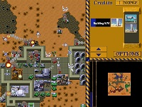

<!doctype html>
<html lang="en">

<head>
	<meta charset="utf-8">

	<title>COMP3330 HiPhi Presentation - AI In Video Games</title>

	<meta name="description" content="COMP3330 2015 HiPhi Presentation">
	<meta name="author" content="Beau Gibson, Tyler Haigh, Simon Hartcher, Robert Logan">

	<meta name="apple-mobile-web-app-capable" content="yes" />
	<meta name="apple-mobile-web-app-status-bar-style" content="black-translucent" />

	<meta name="viewport" content="width=device-width, initial-scale=1.0, maximum-scale=1.0, user-scalable=no, minimal-ui">

	<link rel="stylesheet" href="css/reveal.css">
	<link rel="stylesheet" href="css/theme/black.css" id="theme">
	<link rel="stylesheet" href="css/custom.css">

	<!-- Code syntax highlighting -->
	<link rel="stylesheet" href="lib/css/zenburn.css">
	<link rel="stylesheet" href="lib/mediaelement/mediaelementplayer.css" />

	<!-- Printing and PDF exports -->
	<script>
		var link = document.createElement( 'link' );
		link.rel = 'stylesheet';
		link.type = 'text/css';
		link.href = window.location.search.match( /print-pdf/gi ) ? 'css/print/pdf.css' : 'css/print/paper.css';
		document.getElementsByTagName( 'head' )[0].appendChild( link );
	</script>

		<!--[if lt IE 9]>
		<script src="lib/js/html5shiv.js"></script>
		<![endif]-->
	</head>

	<body>

		<div class="reveal">

			<!-- Any section element inside of this container is displayed as a slide -->
			<div class="slides">

				<section data-markdown>
					<script type="text/template">
					# AI in Video Games
						
					Beau Gibson, Tyler Haigh, Simon Hartcher, Robert Logan
					</script>
				</section>

				<section data-markdown>
					<script type="text/template">
					## Introduction

					* "Game AI" encompasses
						* Design Practices<!-- .element: class="fragment" data-fragment-index="1" -->
						* Path-Finding Algorithms<!-- .element: class="fragment" data-fragment-index="2" -->
						* Neural Networks<!-- .element: class="fragment" data-fragment-index="3" -->
						* Models of Interaction<!-- .element: class="fragment" data-fragment-index="4" -->
						* State Machines<!-- .element: class="fragment" data-fragment-index="5" -->
						* Decision Trees<!-- .element: class="fragment" data-fragment-index="6" -->
					
					* "It aims to establish the belief in a living entity within the
						computer that can act independently of the player"<!-- .element: class="fragment" data-fragment-index="7" -->
						Mateas, 2003<!-- .element: class="fragment" data-fragment-index="7" -->
					</script>
				</section>

				<section data-markdown>
					<script type="text/template">
					## Outline

					* Founding Fathers
					* Applications in Research
					* Conway&#39;s Game of Life
					* Random Numbers in Games
					* Early Game AI
					* The 90&#39;s Explosion
					* Real Time Stategy
					* AI as the Player
					* Search Algorithms
					
					</script>
				</section>
				
				<section data-markdown>
					<script type="text/template">
					## The Founding Fathers ##
					
					Game AI shares its foundations with the rise of digital 
					processing. Claude Shannon and Alan Turing started developing
					chess programs as early as 1950.
					
					Board games were the popular
					choice for experimenting with Artificial Intelligence due to
					
					* Their nature of perfect information
					* The entire state of the game can be captured by the computer
					* They are typically non-trivial search problems with no well-defined
					path to a given solution
					
					<small>([Middleton, 2002](http://web.stanford.edu/group/htgg/sts145papers/zmiddleton_2002_1.pdf))</small>
					
					</script>
				</section>

				<section data-markdown>
					<script type="text/template">
					## Founding Fathers ##

					Shannon published the paper *Programming a Computer for Playing Chess*
					in which he describes how a machine can decide how to move such 
					that it can minimise the possible loss in the worst case 
					scenario ([Shannon, 1949](http://www.pi.infn.it/~carosi/chess/shannon.txt)). 
					
					His reasons for using chess as the basis for his paper include:
					
					* The legal move-set and the end goal is well defined
					* It is neither a trivial problem, nor too difficult to calculate a viable solution
					* There is a element of skilful thinking involved
					* The discrete structure of chess fits well into the design of computers
					
					</script>
				</section>

				<section data-markdown>
					<script type="text/template">
					## Application&#39;s In Research ##

					The primary goal of Game AI is to entertain. As such, developers tend to avoid
					using true "academic" AI, opting for short-cuts and efficiency, whilst maintaining some
					level of intelligence in the system.
					</script>
				</section>

				<section data-markdown>
					<script type="text/template">
					## Conway&#39;s Game of Life

					<figure>
						
						<figcaption>
							<small>Gosper&#39;s glider gun (the father of hacking)</small>
						</figcaption>
					</figure>

					* Cellular automation
					* Deterministic "zero player game"
					* Created in 1970 by John Conway

					<small>
						([LucasVB, 2005](http://en.wikipedia.org/wiki/Conway%27s_Game_of_Life#/media/File:Gospers_glider_gun.gif))<br>
						([DuVall, 2014](http://yournameinlife.com))
					</small>
					</script>
				</section>

				<section data-markdown>
					<script type="text/template">
					## Random Numbers in Games

					* Random number generators (RNG) are integral to game AI
					* Makes games feel immersive and "real"
					* Drives many decisions (events) of in game objects
						* Graphical effects like rain or transitions
						* Frequency and choice of sound effects
						* Should an enemy attack or run away?
					</script>
				</section>

				<section data-markdown>
					<script type="text/template">
					

					* "Random numbers" are values 0-255 stored in an array
					```
					unsigned char rndtable[256] = {
					    0,   8, 109, 220, 222, 241, 149, 107,  75, 248, 254, 140,  16,  66 ,
					    52, 140, 202, 120,  68, 145,  62,  70, 184, 190,  91, 197, 152, 224 ,
					    /* ... */
					    197, 242,  98,  43,  39, 175, 254, 145, 190,  84, 118, 222, 187, 136 ,
					    120, 163, 236, 249
					};
					```
					* Without it, the game doesn&#39;t work.

					<small>([id software, 1997](https://github.com/id-Software/DOOM))</small>
					</script>
				</section>

				<section data-markdown="">
					<script type="text/template">
						#### The Ultimate Doom
						
						<iframe class="stretch" src="https://www.youtube.com/embed/K0nlO87evhY?controls=0&disablekb=1&iv_load_policy=3&start=1380" frameborder="0" ></iframe>

						<small>
							([World of Longplays, 2010](https://www.youtube.com/watch?v=K0nlO87evhY))
						</small>
					</script>
				</section>

				<section data-markdown="">
					<script type="text/template">
					## What happens when you remove randomness?

					* Changed all values to `0x00` or `0xFF`
						* Monsters make the same effect each time
						* Hitscan weapons have no spread 
						* Lights will strobe or never flicker depending on the value
						* Damage values don&#39;t vary
					* Monsters never make an idle sound with `0x00`. With `0xFF` however,
					they make it constantly, drowning everything out

					<small>([Jonathan Dowland, 2015](http://jmtd.net/log/deterministic_doom/))</small>
					</script>
				</section>
                            
				<section data-markdown>
                	<script type="text/template">
						## Early Game A.I.
	
						Throughout the 1970&#39;s and 1980&#39;s, the video game industry relied upon
						very simple hard coded agents within games.
	                                        
						* The Pacman ghosts were given overall "strategies" (Chase/Scatter/Frightened)
						* They were given specific "goal tiles" depending on their personalities       
						
						
                    </script>                               
            	</section>
                            
                <section data-markdown>
                    <script type="text/template">
					## Seeming Intelligence

					Though it was often the case (as with Pacman) that these agents seemed intelligent
					
					* They only gave the illusion of AI<!-- .element: class="fragment" data-fragment-index="1" -->
					* Utilised a simple set of initial rules<!-- .element: class="fragment" data-fragment-index="2" -->
					* Applied little or no in game logic or decision making<!-- .element: class="fragment" data-fragment-index="3" -->
					* This was due in part to the memory constraints of the time<!-- .element: class="fragment" data-fragment-index="4" -->

                    </script>                               
            	</section>
                            
	            <section data-markdown>
                    <script type="text/template">
					## The 90&#39;s Explosion

					As the arcade and video game industry began to wane in the late 80&#39;s, gamers began to crave a better quality of gameplay.  
                    The goal of the industry then was to create a more challenging and lifelike opponent, which would react to the player like a human.  
 
                    </script>                               
            	</section>
                            
                <section data-markdown>
                    <script type="text/template">
					## Real Time Strategy

					Early strategy games implemented simple "turn based" gameplay, but it was not until 1992&#39;s 'Dune II' that real time strategy would come into its own.<!-- .element: class="fragment" data-fragment-index="1" -->  
					
					<!-- .element: class="fragment" data-fragment-index="2" -->
					
					With it&#39;s concurrent management of multiple units and build strategies within 3D perspective, the game set the standard for strategy gameplay and AI, which would continue into games of today.<!-- .element: class="fragment" data-fragment-index="3" --> 
                    </script>                               
            	</section>
                            
                <section data-markdown>
                    <script type="text/template">
					## Spiritual Successors

					Following Westwood&#39;s success, a huge number of RTS games followed which utilsed similar AI methodologies.  
					
					* Warcraft<!-- .element: class="fragment" data-fragment-index="1" -->
					* Command & Conquer<!-- .element: class="fragment" data-fragment-index="2" -->
					* Age Of Empires<!-- .element: class="fragment" data-fragment-index="3" -->
					* Starcraft<!-- .element: class="fragment" data-fragment-index="4" -->
					* Right through to the Total War franchise of today<!-- .element: class="fragment" data-fragment-index="5" -->
                                        
                    </script>                               
            	</section>
                            
                <section data-markdown>
                    <script type="text/template">
					## Neural Networks in Driving
					
					

					1992 - Colin McRae&#39;s Rally 2<!-- .element: class="fragment" data-fragment-index="1" -->   
					
					* Leveraging off his PHD work, Jeff Hannan utilises trained neural networks to control AI cars<!-- .element: class="fragment" data-fragment-index="2" -->
					* Used his own driving as input data<!-- .element: class="fragment" data-fragment-index="3" -->
					* Trained to convergence using RPROP, random weights and a single hidden layer<!-- .element: class="fragment" data-fragment-index="3" -->
					* Two main components: Racing Line & Driving Model<!-- .element: class="fragment" data-fragment-index="4" -->
					* Was unable to learn gear changes - automatic only.<!-- .element: class="fragment" data-fragment-index="5" -->
                                        
                    </script>                               
            	</section>

				<section data-markdown="">
					<script type="text/template">
						## AI as the Player ##
	
						A hot topic for research is using intelligent agents for
						playing video games.
						
						Some notable examples:
						
						* Google AI
						* The "Mario Lives" Project

					</script>
				</section>
				
				<section data-markdown="">
					<script type="text/template">
						## Google AI ##
					
						* Builds upon DeepMind Technologyies research<!-- .element: class="fragment" data-fragment-index="1" -->
						* Aims to combine "the best techniques from machine learning <!-- .element: class="fragment" data-fragment-index="2" -->
						  and systems neuroscince to build powerful general-purpose
						  learning algorithms" 
						* Uses a deep Q-Network with reinforcement learning<!-- .element: class="fragment" data-fragment-index="3" -->
						* Able to beat 49 Atari games<!-- .element: class="fragment" data-fragment-index="4" -->
						
						<small>([DeepMind, 2015](http://deepmind.com/))</small><!-- .element: class="fragment" data-fragment-index="4" -->
						
					</script>
				</section>
				
				<section data-markdown="">
					<script type="text/template">
						## Google AI ##
					
						* Start off with no knowledge of the game. Only the pixels and gamescore<!-- .element: class="fragment" data-fragment-index="1" -->
						* Goal is to maximise score<!-- .element: class="fragment" data-fragment-index="2" -->
						* First learning iterations randomnly press buttons to determine inputs<!-- .element: class="fragment" data-fragment-index="3" -->
						* Starts to figure out what it is controlling and adapts to become perfect
						  at the game<!-- .element: class="fragment" data-fragment-index="4" -->
						* Hard to plan long term. Hence it is bad at PacMan<!-- .element: class="fragment" data-fragment-index="5" -->
						
						<small>([Hassabis, 2015](http://www.theverge.com/2015/2/25/8108399/google-ai-deepmind-video-games))</small> <!-- .element: class="fragment" data-fragment-index="5" -->
						
					</script>
				</section>
				
				<section data-markdown="">
					<script type="text/template">
						## Mario Lives ##
					
						* Run by the Association for the Advancement of Artificial Intelligence (AAAI)<!-- .element: class="fragment" data-fragment-index="1" -->
						* Develop an artificial agent who gets to know and becomes alive in its own world<!-- .element: class="fragment" data-fragment-index="2" -->
						* Mario can recognise natural speech using context grammar<!-- .element: class="fragment" data-fragment-index="3" -->
						* Mario learn from his own experiences<!-- .element: class="fragment" data-fragment-index="4" -->
							* After jumping on Goomba
							* "What do you know about Goomba?"
							* Mario: "If I jump on Goomba, then it maybe dies"
						* and from what he is told<!-- .element: class="fragment" data-fragment-index="5" -->
						    * "Goomba dies, when you jump on Goomba"
							* Mario: "If I jump on Goomba, then it certainly dies"
					
					</script>
				</section>
				
				<section data-markdown="">
					<script type="text/template">
						## Mario Lives ##
					
						<iframe class="stretch" src="https://www.youtube.com/embed/AplG6KnOr2Q?start=56" frameborder="0" allowfullscreen></iframe>
						
						<small>([Ehrenfeld, et. al., 2015](https://www.youtube.com/watch?v=K0nlO87evhY))</small>
					</script>
				</section>
				
				<section data-markdown="">
					<script type="text/template">
						## Search Algorithms - A* ##
					
						* Widely used in pathfinding and graph traversal<!-- .element: class="fragment" data-fragment-index="1" -->
						* Heuristic search algorithm that is efficient and accurate<!-- .element: class="fragment" data-fragment-index="2" -->
						* Finds the path with least-cost or distance (an extenstion of Dijkstra) <!-- .element: class="fragment" data-fragment-index="3" -->
						
						<small>(Russel, Norvig, 2014)</small><!-- .element: class="fragment" data-fragment-index="3" -->
						
					</script>
				</section>
				
				<section data-markdown="">
					<script type="text/template">
						## Mario Lives ##
					
						* Uses an improved A* algorithm
					
						<iframe class="stretch" src="https://www.youtube.com/embed/AplG6KnOr2Q?start=248" frameborder="0" allowfullscreen></iframe>
						
						<small>([Ehrenfeld, et. al., 2015](https://www.youtube.com/watch?v=K0nlO87evhY))</small>
					</script>
				</section>
				
				<section data-markdown>
					<script type="text/template">
					## Bibliography ##
					
					<small>http://en.wikipedia.org/wiki/Conway%27s_Game_of_Life#/media/File:Gospers_glider_gun.gif</small>
					<small>http://yournameinlife.com</small>
					<small>https://github.com/id-Software/DOOM</small>
					<small>https://www.youtube.com/watch?v=K0nlO87evhY</small>
					<small>http://jmtd.net/log/deterministic_doom/</small>
					<small>http://web.stanford.edu/group/htgg/sts145papers/zmiddleton_2002_1.pdf</small>
					<small>http://www.pi.infn.it/~carosi/chess/shannon.txt</small>
					<small>http://deepmind.com/</small>
					<small>http://www.theverge.com/2015/2/25/8108399/google-ai-deepmind-video-games</small>

					</script>
				</section>
				
			</div>

		</div>

		<script src="lib/js/head.min.js"></script>
		<script src="js/reveal.js"></script>

		<script>

			// Full list of configuration options available at:
			// https://github.com/hakimel/reveal.js#configuration
			Reveal.initialize({
				controls: true,
				progress: true,
				history: true,
				center: true,

				transition: 'slide', // none/fade/slide/convex/concave/zoom

				// Optional reveal.js plugins
				dependencies: [
				{ src: 'lib/js/classList.js', condition: function() { return !document.body.classList; } },
				{ src: 'plugin/markdown/marked.js', condition: function() { return !!document.querySelector( '[data-markdown]' ); } },
				{ src: 'plugin/markdown/markdown.js', condition: function() { return !!document.querySelector( '[data-markdown]' ); } },
				{ src: 'plugin/highlight/highlight.js', async: true, condition: function() { return !!document.querySelector( 'pre code' ); }, callback: function() { hljs.initHighlightingOnLoad(); } },
				{ src: 'plugin/zoom-js/zoom.js', async: true },
				{ src: 'plugin/notes/notes.js', async: true }
				]
			});
		</script>

	</body>
	</html>
